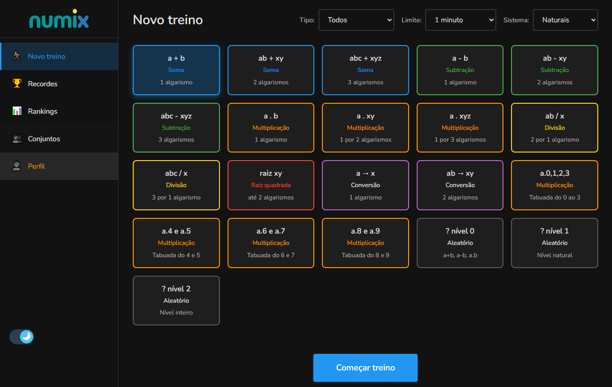
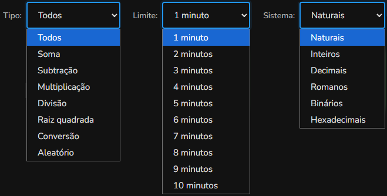
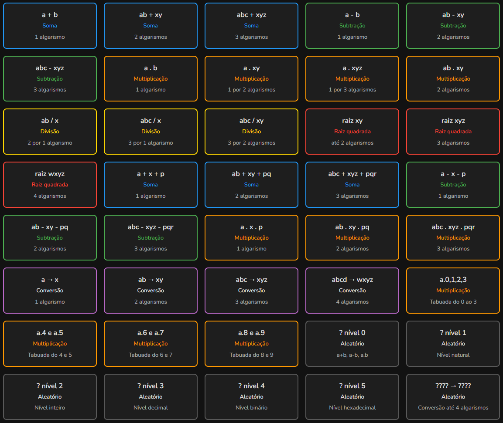
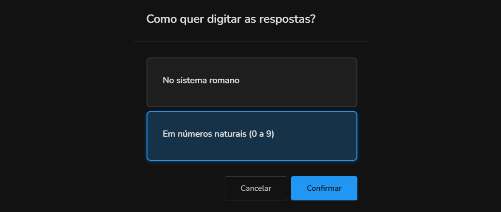
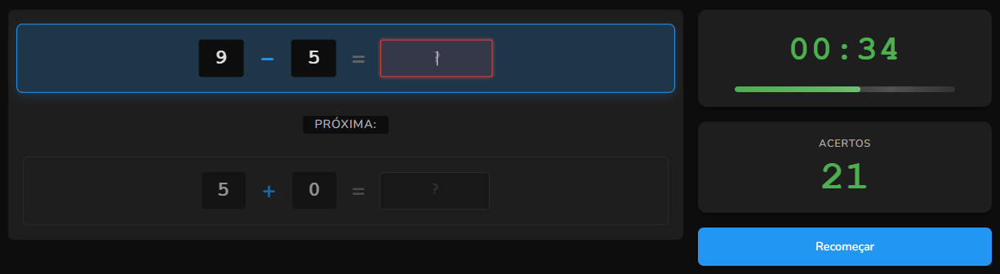

Sobre novos treinos no Numix
Visão geral
Você pode criar um novo treino escolhendo um cartão de operação, um limite de tempo e um sistema numérico.

Opções baseadas no seu nível no Numix
As opções estão disponíveis de acordo com seu nível. A cada nível aparecem novas operações, limites e sistemas.
No primeiro nível (natural) você tem as operações soma, subtração, multiplicação e divisão. Tem também um tipo de operação aleatória que mistura todas as operações disponíveis.
Nos próximos níveis vão aparecer as operações de raiz quadrada e conversão de sistemas. Você também poderá trabalhar com números inteiros, decimais, romanos, binários e hexadecimais. Além disso, você poderá ter limite de tempo de até 5 minutos.
Filtros disponíveis
Na parte superior da tela você encontra filtros que ajudam a personalizar sua experiência:
Filtro de tipo
Use o filtro "Tipo" para encontrar mais rápido a operação que você quer treinar.
Limite de tempo
Define quanto tempo você terá para fazer o maior número de operações possíveis.
Sistema numérico
Escolha o sistema numérico em que deseja trabalhar: números naturais, inteiros, decimais, romanos, binários ou hexadecimais.

Escolhendo a operação
Selecione uma operação clicando no cartão correspondente. As operações são agrupadas por tipo e cada um tem uma cor específica para facilitar a identificação.

Sistemas especiais: romanos, binários e hexadecimais
Se você escolher um sistema romano, binário ou hexadecimal, após clicar em "Começar treino" aparecerá uma tela perguntando como você prefere dar suas respostas:
- No sistema escolhido: você verá as questões e dará as respostas usando o sistema selecionado (ex: números romanos como IV, X, etc.);
- Em números naturais: As questões serão mostradas no sistema escolhido, mas você poderá responder em números naturais (1, 2, 3, etc.).

Começando o treino
Após escolhido o formato do treino, clique no botão "Começar treino".
O sistema sempre mostra a conta atual e a próxima logo abaixo. Quando você digitar a resposta correta, já virá a próxima para responder, não precisa apertar a tecla enter. Quando você digitar algo errado, o sistema apaga tudo o que digitou e deixa a caixa de resposta vermelha para saber que errou. O sistema só apresentará a próxima conta quando você digitar a resposta correta, não tem como pular uma conta.

Dicas para melhor desempenho no Numix
Para aprender
Comece com as operações mais simples. Conforme for se sentindo confortável, aumente gradualmente a dificuldade.
Para competir
Se além de aprender você quiser competir nos rankings, recomendamos treinar no computador, pois é possível ser mais rápido do que no celular devido à facilidade de digitação.